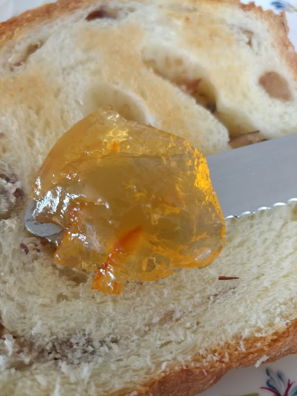
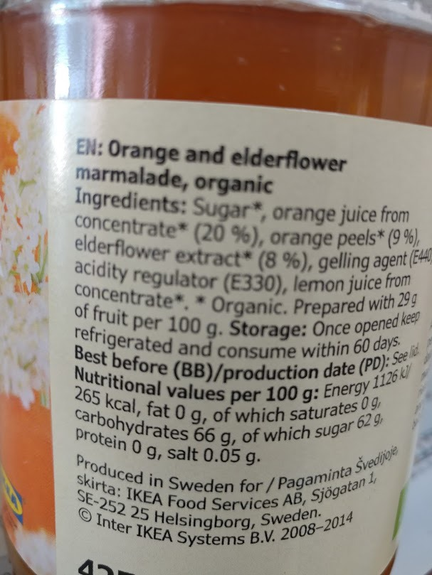
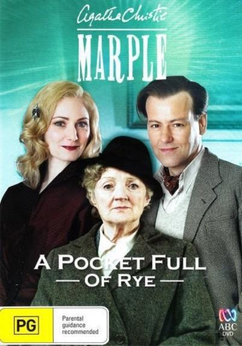

여왕과 마멀레이드 - 협상과 껍질과 아침식사 이야기
게시: 2018-12-31T06:30:00+09:00
저는 신입사원 기본 교육을 싱가폴에서 싱가폴 강사에게서 받았습니다. 그 중에는 협상에 대한 내용도 있었는데, 거기서 당시로서는 굉장히 인상적인 강의 내용이 있었습니다. 그 여성 강사분이 가르치려던 것은 협상을 위해서는 상대방이 진짜 원하는 것이 뭔지 파악해야 한다는 것이었는데, 그 스토리 라인을 아래와 전개하더라고요.
"내가 학생 시절에 내 여동생과 냉장고에 하나 밖에 안 남아 있던 오렌지를 두고 서로 다툰 적이 있었다. 한참을 싸우고 난 뒤에야 알았는데, 내가 원하는 것은 오렌지로 쥬스를 만들어 마시려는 것이었는데 동생은 오렌지 껍질로 마멀레이드를 만드려는 것이었다. 알고 보면 서로 싸울 이유가 전혀 없었던 것이다."
제 기억으로는 저는 그때 이미 마멀레이드가 뭔지는 대충 알고 있었고 (그것도 카투사 복무 중에였던가...?) 먹어본 적도 있었던 것 같습니다. 그럼에도 불구하고 저는 그때 그 강사의 말이 실제로 말이 되는 이야기라고 생각하며 감탄했었습니다.
그러나 알고 보면 그 강사의 스토리 라인은 엉터리였습니다. 저 이야기는 물론 강사의 실제 경험담이 아니라 흔히 써먹는 그런 협상 교육의 픽션일 뿐인데다, 마멀레이드에 분명히 오렌지 껍질이 조금 들어가긴 합니다만 주재료는 바로 오렌지 쥬스거든요. 그러니까 언니와 동생은 죽어라고 서로 싸울 운명이었던 것이지요.


(사실 이 글은 전에 이케아에서 사온 스웨덴제 마멀레이드 병을 새로 오픈한 기념으로 쓰는 것입니다. 주성분은 보시다시피 오렌지 주스입니다.)
미국에서는 과육을 통째로 갈아서 만든 것을 잼(jam)이라고 부르고 과즙, 그러니까 쥬스만을 이용해 만든 것을 젤리(jelly)라고 구분해서 부릅니다. 미국 애들이 간단한 점심 식사로 애용하는 PBJ라는 것도 땅콩버터와 젤리(peanut butter & jelly sandwich) 샌드위치이지 땅콩버터와 잼 샌드위치는 아닌거지요. 그러나 그렇게 깐깐하게 구분하는 경우는 미국 내에서도 그다지 많지는 않은 것 같습니다. 그리고 영국 등 미국 외 지역에서는 그냥 다 잼이라고 부른다고 합니다. 영국에서도 젤리는 우리나라에서와 같은 뜻인 물컹물컹한 디저트용 과일 젤(gel) 가공식품을 말한다고 합니다.
(PBJ sandwich라는 단어로 이미지 검색을 하다 찾은 사진인데, 이 글에서 주장하는 바는 '땅콩버터와 잼 샌드위치로 점심 때우는 것이 사실 건강에도 그렇게 해롭지는 않고 돈 절약에 매우 좋다' 라고 주장하는 것입니다. 물론 정반대로, 잼 바른 빵이야말로 건강에 매우 나쁘다고 주장하는 전문가들이 많습니다.)
우습게도, 이 젤리(jelly)라는 말 자체는 다른 모든 좋은 것들처럼 프랑스어에서 유래된 단어입니다. 프랑스어로 과즙이나 육수 등이 굳은 것을 젤레(gelée, 거의 쥴레 정도로 발음이 됩니다)라고 하는데, 이 단어에서 유래된 것이라고 하거든요. 반면에 잼(jam)이라는 것은 교통 체증이라는 뜻의 traffic jam 처럼 '막힌다'라는 뜻이 원래 뜻이었는데, 나중에 진득진득하게 굳힌 과일 잼이라는 뜻으로도 쓰이게 되었답니다. 잼은 병을 거꾸로 들어도 잘 흘러나오지 않아서 그런 단어로 쓰이게 되었나 봐요. 정작 영국에 과일 잼이라는 신상품을 전달해준 프랑스에서는 젤리든 잼이든 꽁피튀르(confiture)라고 부릅니다. 심지어는 오늘의 주제인 마멀레이드도 프랑스에서는 그냥 꽁피튀르라고 부르는 경우가 많고, 굳이 구별하여 la marmelade d'oranges (마르멀라드 도랑쥐)라고 부르는 경우도 종종 있는 정도랍니다.
마멀레이드는 과일로 만든 잼 중에서도 다소 독특한 위치를 차지하고 있는 잼입니다. 싱가폴 강사가 오해할 정도로 (또는 어리숙하게도 제가 속을 정도로) 다른 잼과는 달리 과일 껍질을 함유하고 있기 때문입니다. 특히 사과나 복숭아 등은 껍질째 먹기도 하지만 오렌지는 껍질이 두꺼운데다 쓰고 텁텁한 맛이 나기 때문에 껍질을 절대 먹지 않거든요. 그런데 그런 몹쓸 껍질을 잼 속에 넣었을까요 ?
(수동 마멀레이드 기계입니다. 정확하게는 오렌지 껍질을 잘게 써는 도구이지요.)
이유는 펙틴(pectin) 때문에 그렇답니다. 위에서 잼과 젤리를 구분해서 말씀드렸는데, 잼은 그냥 과일을 통째로 으깨서 설탕을 넣고 끓이면 대충 만들어집니다. 그러나 사과 주스에 설탕을 넣고 끓이면 사과 젤리가 만들어질까요 ? 저는 직접 해보지 않아서 잘 모르겠는데, 안 만들어진답니다 ! 그냥 엄청나게 진하고 단 가당 사과 주스가 되어버린다네요. 잼처럼 젤라틴 형태로 만들어지려면 펙틴(pectin)이라는 성분이 있어야 하는데, 이는 주로 과일 껍질 속에 많은 물질입니다. 그러니 우아하고 깔끔하게 과육 찌꺼기는 다 걸러내고 주스만 뽑아서 젤리를 만들기 위해서는 인공으로 만든 펙틴을 따로 집어넣어야 했던 것이지요. 그러나 오렌지 마멀레이드는 인공 펙틴 따위가 없던 17세기 후반에 이미 존재했던 물건입니다. 어떻게 가능했을까요 ? 바로 오렌지 껍질 덕분입니다. 누가 맨처음에 오렌지 껍질을 잘게 썰어 넣으면 마멀레이드가 젤라틴처럼 응고된다는 것을 발견했는지는 기록에 없지만, 아무튼 그 이름 모를 천재 덕분에 오늘날의 마멀레이드가 탄생하게 된 것입니다.
마멀레이드에는 다른 잼과는 다른 점이 또 있습니다. 그것도 바로 그 껍질 때문이기는 한데, 바로 약간 쓴 맛이 난다는 것이지요. 예전에 TV에서 외화 드라마로 방영되었던 아가사 크리스티 추리 드라마에서 봤던 내용 중에 마멀레이드가 연관된 독살 장면이 있었습니다. 어떤 가정집에서 독극물에 의한 살인 사건이 벌어졌습니다. 나중에 조사를 해보니 사용된 독극물은 원래 약간 쓴 맛이 나는 물질이라서, 피살자가 의심하지 않고 먹게 하기 위해 독극물을 아침식사에 나오는 커피나 홍차, 마멀레이드 등과 같이 약간 쓴 맛이 나는 식품 속에 넣었을 것이라고 추리하는 장면을 본 기억이 납니다. 실제로 그 독극물은 마멀레이드에 들어있었고요.

(찾아보니 그 아가사 크리스티의 추리물 원작은 A Pocket Full of Rye 라는 작품이었네요.)
마멀레이드가 나오는 그 추리 소설 장면에서 드는 생각 중 첫번째 것은 의외로 많은 기호식품에서 쓴 맛이 난다는 점입니다. 위에서 언급된 커피, 차, 마멀레이드는 물론 초콜렛에서도 약간 씁쓸한 맛이 나지요. 보통 사람들이 쓴 맛을 싫어한다고 하지만 의외로 쓴 맛이 우아한 맛을 내는데 꼭 필요한 모양입니다. 물론 그 쓴 맛을 그대로 즐기는 사람보다는 그 쓴 맛을 엄청난 설탕과 우유 등으로 중화시켜서 즐기는 분들이 훨씬 많지요.
두번째 생각할 부분은 왜 마멀레이드를 비롯한 과일 잼은 꼭 아침식사에만 나오느냐 하는 점입니다. 전에 (그때는 국내의 어떤 고급 콘도에서 진행된 교육이었는데) 회사 교육 때 강사를 하시던 어떤 노년의 컨설턴트분과 점심 식사 테이블에 같이 앉은 적이 있었습니다. 양식으로 제공된 그 점심에서 롤빵과 함께 1회용으로 포장된 딸기잼도 함께 나왔었습니다. 그걸 보고 그 강사분이 '원래 과일 잼은 아침에만 나오는 것이며 점심이나 저녁에는 잼 대신 버터가 나와야 하는데 이 식당 매니저는 양식을 제대로 공부하지 않은 모양'이라고 혀를 차시더라고요. 생각해보니 실제로 저도 해외 호텔에서 식사를 할 때 점심이나 저녁 식사에 과일 잼이 나오는 것을 본 적이 한번도 없었습니다. 제 긴 카투사 생활 중에도 없었고요. 점심이나 저녁에 유일하게 나오는 잼은 디저트로 나오는 패스트리에 이미 잔뜩 채워진 잼 정도였지요.
(전에 파리에 가족 여행 갔을 때 먹었던 호텔 조식... 호텔 부페 식당에서 저렇게 작은 잼 병이 제공되는 것은 조식 뿐이더라고요.)
저는 여기에 대해서는 아직까지도 딱히 답을 찾지 못했습니다. 제 짐작에는 서양인들이 과일을 의외로 많이 먹지 않으며 과일을 먹더라도 주로 아침식사에만 먹더라는 것과 상관있는 것 같습니다. 제 카투사 복무 중에도 이유는 잘 모르겠지만 과일은 아침식사 때만 나왔고 점심 저녁에는 따로 과일이 나오지는 않았거든요. 잼이든 젤리든 원래 시작은 빵에 발라먹기 위한 버터 대용이라기보다는 과일을 오래 보존하기 위한 것이었으니 과일 대신 또는 과일과 함께 아침 식사만 나오는 것 같습니다.
처음부터 이렇게 마멀레이드 등 과일 잼을 아침에만 먹었던 것은 아니었습니다. 가령 루이 14세 같은 경우 정찬을 들 때 마지막 디저트로 마멀레이드를 먹는 것을 매우 좋아했다고 합니다. 요즘처럼 빵에 발라 먹는 것이 아니라 은접시에 담아온 것을 푸딩처럼 은스푼으로 떠먹는 형태였지요. 이렇게 시도 때도 없이 먹던 마멀레이드를 아침식사에 먹기 시작한 것은 스코틀랜드가 처음이라고 합니다. 이런 습관은 곧 영국으로 전파되어, 19세기에는 영국인들도 아침에 마멀레이드를 먹기 시작했습니다. 미국 여류 작가인 루이자 알콧(Louisa May Alcott)이 1800년대에 영국을 방문했을 때 기록한 글에서, 마멀레이드와 차가운 햄 한 조각이 영국식 아침식사의 필수품이라고 적었을 정도니까요.
마멀레이드 이야기를 하는데 난데없이 스코틀랜드가 주요 역할을 하는 나라로 나오니까 약간 의아하실 것입니다. 따뜻한 지방에서 열리는 오렌지로 만드는 마멀레이드는 춥고 척박한 스코틀랜드와는 별 상관이 없어 보입니다. 그러나 스코틀랜드는 마멀레이드의 역사에서 실제로 매우 중요한 역할을 했습니다. 원래 마멀레이드는 좀더 뻑뻑하고 시커먼 색깔을 띤 음식이었습니다. 그러던 것이 스코틀랜드에 가면서 만들 때 좀 더 물 함량을 늘려 오늘날처럼 빵에 쉽게 발라먹을 수 있는 밝은 오렌지색의 스프레드 형태로 만들어졌다고 합니다.
스코틀랜드에 마멀레이드를 전파한 사람은 16세기 중반 스코틀랜드의 여왕 메리 1세(Mary Stuart, Mary I of Scotland)였다고 알려져 있습니다. 프랑스에서 어린 시절을 보낸 메리는 귀국할 때 마멀레이드를 들고 왔다고 전해지는데, 일부 사람들은 마멀레이드라는 이름 자체가 메리 1세 때문에 생겼다고 주장하기도 합니다. 메리는 머리가 아플 때마다 프랑스에서 가져온 마멀레이드를 먹었는데, '메리가 아프다'라는 "Mary is sick"이라는 영어 문장이 프랑스어로는 "Marie est malade"라고 되거든요. 그래서 프랑스어를 쓰는 시녀가 뭔가 우아하게 "Marie est malade" (마리 에 말라드)라고 혼잣말을 하며 신기한 과일 잼 단지를 들고가는 것을 본 스코틀랜드 사람들이 그 과일 잼을 '마멀레이드'라고 불렀다는 이야기지요.
(미모로 유명했다는 메리 1세입니다. 다들 아시다시피 이 여왕은 잉글랜드의 엘리자베스 1세에 대한 암살 모의 혐의로 목이 잘렸습니다.)
무척 재미있고 그럴싸한 이야기이기는 하지만 마멀레이드라는 이름은 메리 여왕과는 아무 상관이 없고 포르투갈어 marmelada에서 나온 것이라고 합니다. 서양모과(영어로는 quince)를 포르투갈어로는 marmelo(마르멜루)라고 하는데, 이걸 꿀에 절여서 잼으로 만든 서양모과 잼을 marmelada라고 합니다. 원래 마멀레이드는 꼭 오렌지로 만든 잼만을 뜻하지는 않고 모든 과일 잼을 부르는 이름이었는데, 저로서는 이해가 안 가지만 서양모과 잼은 가장 오래된 잼으로서 그리스와 로마 시대부터 비롯된 것이라고 하거든요. 그리스어로는 서양모과를 melímēlon(꿀 + 사과)으로 불렀는데, 원래 서양모과는 과육이 너무 단단하고 떫은 맛이 나서 그대로는 못 먹고 꿀에 절여서 부드럽게 해서 먹었다고 합니다.
Source : https://life.spectator.co.uk/2016/10/jam-beautifully-preserved-history/
https://en.wikipedia.org/wiki/Fruit_preserves
https://en.wikipedia.org/wiki/Marmalade
https://www.dailymail.co.uk/femail/food/article-3746934/The-foods-NEVER-eat-breakfast.html
https://en.wikipedia.org/wiki/Orange_(fruit)
http://www.nyu.edu/classes/bkg/forklore/archives/2005/03/marmalade_redux.html
https://www.quora.com/Why-does-all-marmalade-have-orange-peel-in-it-Where-can-I-find-a-marmalade-without-orange-peel
https://en.wikipedia.org/wiki/A_Pocket_Full_of_Rye
https://moneysavingmom.com/2012/04/if-you-want-something-badly-enough-you-can-usually-find-a-way.html